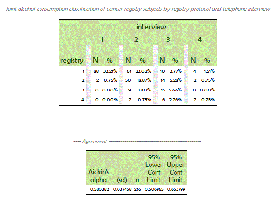

|
Version 1.3.1 (March 2013)
SAS macro %AickinAlpha
Aickin's Alpha agreement coefficient
The macro presented below computes the agreement coefficient α defined inMaximum Likelihood Estimation of Agreement in the Constant Predictive Probability Model, and Its Relation to Cohen's Kappa Mikel Aickin Biometrics 46, 293-302, June 1990.
Menu
Top Syntax
%AickinAlpha(data, var1, var2, wt=1, values=, agree=&var1=&var2, outdata=, printalphanow=1, epsilon=1e-8, maxniter=5000, printfmt=8.6, title=, pseudocount=1, printtable=1, level=0.95);
Top %AickinAlpha arguments list
Top Example
We illustrate the use of %AickinAlpha through the Alcohol consumption classification example presented in Aickin's paper (cited above), Table 4. The SAS code below first defines the data set and then calls %AickinAlpha. Note that in that example, the variables registry and interview are considered as agreeing if registry=interview OR (interview=3 AND registry ∈ {2,4}).
data alcohol;
input registry interview m; cards; 1 1 88 1 2 61 1 3 10 1 4 4 2 1 2 2 2 50 2 3 14 2 4 2 3 1 0 3 2 9 3 3 15 3 4 0 4 1 0 4 2 2 4 3 6 4 4 2 ; run; %AickinAlpha(alcohol, registry, interview, wt=m, agree=registry eq interview or (interview eq 3 and (registry in (2,4))), title="Alcohol consumption classification"); The SAS code above produces the output below, where the first part (the crosstab) could have been omitted from output by using option printtable=0.  Top Code
%macro AickinAlpha(data, var1, var2, wt=1, values=, agree=&var1=&var2, outdata=, printalphanow=1, epsilon=1e-8, maxniter=5000, printfmt=8.6, title=, pseudocount=1, printtable=1, level=0.95);
%local converged i lastchange lcount level100 m ncells niter nnonemptycells unlistedvalue unlistedvalues uservalue z; %local dsagree dscountsTable dscountsX dscountsXComplete dsdatavaluesNotInValues dsfComplete dsout dsuserlast dsuservalues dsvalues dsvaluesX; %let dsuserlast = &syslast; %let z = probit((1+&level)/2); %let level100 = %sysevalf(100*&level); %let dsout = %NewDatasetName(tmpout); /* This macro computes the alpha coefficient described in: Maximum Likelihood Estimation of Agreement in the Constant Predictive Probability Model, and Its Relation to Cohen-s Kappa Mikel Aickin Biometrics 46, 293-302, June 1990. */; %let dsvalues = %NewDatasetName(values); proc sql; create table &dsvalues as select distinct(x.__myxvar) as __myxvar from (select distinct(&var1) as __myxvar from &data outer union corresponding select distinct(&var2) as __myxvar from &data) as x; quit; %if %length(%superq(values)) %then %do; * user called this macro with values defined in values=: why not use them!?!?; %let nvalues = %eval(1 + %length(%sysfunc(compbl(&values))) - %length(%sysfunc(compress(&values)))); %let dsuservalues = %NewDatasetName(uservalues); data &dsuservalues; %do i = 1 %to &nvalues; %let uservalue = %scan(&values, &i, %str( )); __myxvar = &uservalue; output; %end; run; proc sort data=&dsuservalues; by __myxvar; run; proc sort data=&dsvalues; by __myxvar; run; %let dsdatavaluesNotInValues = %NewDatasetName(datavaluesNotInValues); data &dsdatavaluesNotInValues; merge &dsvalues (in=in1) &dsuservalues (in=in2); by __myxvar; if in1 and not in2; run; proc sql noprint; select N(__myxvar) into: unlistedvalue from &dsdatavaluesNotInValues; quit; %if &unlistedvalue %then %do; proc sql noprint; select __myxvar into: unlistedvalues separated by ', ' from &dsdatavaluesNotInValues; quit; %put ERROR: [macro AickinAlpha] values found in data &data for variable &var1 (or &var2) [=&unlistedvalues] not listed in values given through AickinAlpha values= argument; proc datasets nolist; delete &dsdatavaluesNotInValues &dsuservalues; run; %goto skip; %end; proc datasets nolist; delete &dsvalues &dsdatavaluesNotInValues; change &dsuservalues = &dsvalues; run; %end; %let dsvaluesX = %NewDatasetName(valuesX); proc sql; create table &dsvaluesX as select a.__myxvar as &var1, b.__myxvar as &var2 from &dsvalues as a, &dsvalues as b where not missing(a.__myxvar) and not missing(b.__myxvar); quit; %let dscountsX = %NewDatasetName(countsX); proc sql; create table &dscountsX as select &var1, &var2, sum(&wt) as __count from &data where not missing(&var1) and not missing(&var2) group &var1, &var2; quit; %let dscountsXComplete = %NewDatasetName(countsXComplete); proc sql; create table &dscountsXComplete as select coalesce(k.&var1, u.&var1) as &var1, coalesce(k.&var2, u.&var2) as &var2, coalesce(k.__count, 0) as __count from &dscountsX as k full join &dsvaluesX as u on k.&var1 eq u.&var1 and k.&var2 eq u.&var2; quit; data &dscountsXComplete; set &dscountsXComplete; __agree = &agree; run; %if &printtable %then %do; %let dsfComplete = %NewDatasetName(fComplete); proc sql noprint; select ceil(log10(2+max(__count))) into :lcount from &dscountsXComplete; quit; proc sql; create table &dsfComplete as select &var1, &var2, __count, __count/sum(__count) as __p, . as __i from &dscountsXComplete; quit; proc report data=&dsfComplete nofs style={rules=none cellspacing=0} nowd headskip headline missing; column &var1 &var2,(__i __count __p); define &var1 / group; define &var2 / group across; define __i / display style={foreground=GWH background=GWH cellwidth=1pt font_size=1}; define __count / analysis sum 'N' f=&lcount..0; define __p / analysis sum '%' f=percent8.2 style={font_style=italic foreground=GRB}; run; proc datasets nolist; delete &dsfComplete; run; %end; * Treat special case where the two variables compared present only one value (how can there be disagreement in that case?!??!); proc sql noprint; select N(__count), sum(__count>0), sum(__count) into :ncells, :nnonemptycells, :m from &dscountsXComplete; quit; %if &m = 0 %then %do; %let converged = 1; data &dsout; alpha = .; sd_alpha = .; n = &m; niter = .; lastchange = .; converged = .; output; run; %goto report; %end; %else %if &ncells = 1 %then %do; %let converged = 1; data &dsout; alpha = 1; sd_alpha = .; n = &m; niter = 0; lastchange = .; converged = 1; output; run; %goto report; %end; %let dscountsTable = %NewDatasetName(countsTable); proc transpose data=&dscountsXComplete out=&dscountsTable (drop=&var1 _NAME_) prefix=__z; var __count; by &var1; id &var2; run; %let dsagree = %NewDatasetName(agree); proc transpose data=&dscountsXComplete out=&dsagree (drop=&var1 _NAME_) prefix=__d; var __agree; by &var1; id &var2; run; %if &nnonemptycells = 1 %then %do; * return alpha = 0|1 depending on the agreement as defined by the rule in agree=; proc iml; use &dscountsTable; read all into k; use &dsagree; read all into d; ssize = sum(k); P0 = sum(d # k) / ssize; sd_alpha = .; niter = 0; change = .; converged = 1; outres = P0 || sd_alpha || ssize || niter || change || converged; create &dsout from outres [colname={"alpha" "sd_alpha" "n" "niter" "lastchange" "converged"}]; append from outres; quit; proc datasets nolist; delete &dscountsTable &dsagree; run; %goto report; %end; proc iml; use &dscountsTable; read all into k; use &dsagree; read all into d; m = nrow(k); ssize = sum(k); k = k + &pseudocount/m/m; * Aickin-s suggestion to ensure computational convergence; n = ssize + &pseudocount; J = J(m,1,1); r = J` * k`; c = k` * J; A = sum(d # k); P0 = A / n; * Initial values; pr = r/n; pc = c/n; s = pr * d * pc; alpha = (P0 - s) / (1 - s); niter = 0; do until(change < &epsilon | niter = &maxniter); oldalpha = alpha; niter = niter + 1; pr = r / n / (1 - alpha + alpha/s*(d * pc)`); pr(|1|) = 1 - sum(pr(|2:m|)); pc = c / n / (1 - alpha + alpha/s*(pr * d)`); pc(|1|) = 1 - sum(pc(|2:m|)); s = pr * d * pc; alpha = (P0 - s) / (1 - s); change = abs(alpha-oldalpha); end; if change < &epsilon then converged = 1; else converged = 0; * estimate variance of alpha MLE; d2Lda2 = - n * (1-s) / (1-alpha) / ((1-alpha)*s + alpha); * scalar; T = (1-alpha) / alpha; * scalar; V = alpha / s / ((1-alpha)*s + alpha); * scalar; pcdiff = pc(|2:m|) - pc(|1|); * m-1 x 1; prdiff = pr(|2:m|) - pr(|1|); * m-1 x 1; d2Ldadpri = - A * pcdiff / P0 / P0; * m-1 x 1; d2Ldadpcj = - A * prdiff / P0 / P0; * m-1 x 1; d2Ldpridprj = diag(- r(|2:m|) / (pr(|2:m|) # pr(|2:m|))) - r(|1|) / pr(|1|) / pr(|1|) + A * (2*s*T + 1) * V * V * (pcdiff * pcdiff`); * m-1 x m-1; d2Ldpcidpcj = diag(- c(|2:m|) / (pc(|2:m|) # pc(|2:m|))) - c(|1|) / pc(|1|) / pc(|1|) + A * (2*s*T + 1) * V * V * (prdiff * prdiff`); * m-1 x m-1; d2Ldpridpcj = - A * V * (J(m-1,m-1,1)+I(m-1)) + A * (2*s*T + 1) * V * V * (pcdiff * prdiff`); * m-1 x m-1; /* The matrix of second derivatives is composed of vectors and matrices computed above. The variance of alpha-s estimator is the top-left component of its inverse. The matrix is symetric and constructed as follows: alpha Pr1 Pr2 ... Prq Pc1 Pc2 ... Pcq ------------ -------------------- ------------------- alpha - d2Lda2 - - t(d2Ldadpri) - - t(d2Ldadpcj) - ------------ -------------------- ------------------- Pr1 -------------------- ------------------- Pr2 - d2Ldpridprj - - d2Ldpridpcj - ... - - - - Prq -------------------- ------------------- Pc1 ------------------- Pc2 - d2Ldpcidpcj - ... - - Pcq ------------------- */; var1 = d2Lda2 || d2Ldadpri` || d2Ldadpcj`; * 1 x 2m-1; var2 = d2Ldadpri || d2Ldpridprj || d2Ldpridpcj; * m-1 x 2m-1; var3 = d2Ldadpcj || d2Ldpridpcj` || d2Ldpcidpcj; * m-1 x 2m-1; var = var1` || var2` || var3`; * 2m-1 x 2m-1; var = INV(var); sd_alpha = sqrt(- var(|1,1|)); outres = alpha || sd_alpha || ssize || niter || change || converged; create &dsout from outres [colname={"alpha" "sd_alpha" "n" "niter" "lastchange" "converged"}]; append from outres; quit; proc datasets nolist; delete &dsagree &dscountsTable; run; proc sql noprint; select niter, lastchange, converged into :niter, :lastchange, :converged from &dsout; quit; %report: data &dsout; set &dsout; lcl = alpha - &z * sd_alpha; ucl = alpha + &z * sd_alpha; if lcl < 0 and not missing(lcl) then lcl = 0; if ucl > 1 then ucl = 1; run; %if &converged eq 0 %then %do; %put ERROR: [macro AickinAlpha] algorithm did not converge (last change = &lastchange > epsilon=&epsilon) after &maxniter iterations; %goto skip; %end; %else %if &printalphanow %then %do; proc report data=&dsout nofs style={rules=none cellspacing=0} nowd headskip headline missing; column alpha sd_alpha n lcl ucl; define alpha / analysis "Aickin's alpha" f=&printfmt; define sd_alpha / analysis "(sd)" f=&printfmt; define n / display "n"; define lcl /display "&level100% Lower Conf Limit" f=&printfmt; define ucl / display "&level100% Upper Conf Limit" f=&printfmt; title1 '---- Agreement -----------------------------------------------'; title2 &title; run; %end; %skip: proc datasets nolist; delete &dscountsX &dscountsXComplete &dsvalues &dsvaluesX; run; %if %length(%superq(outdata)) %then %do; proc datasets nolist; change &dsout=&outdata; run; %end; %else %do; proc datasets nolist; delete &dsout; run; %end;; %let syslast = &dsuserlast; %mend AickinAlpha; %macro NewDatasetName(datasetname); %*Finds the first unused dataset named *datasetname*, adding as many underscores as necessary at its beginning to make it unique!; %local newdatasetname; %let newdatasetname = %sysfunc(compress(&datasetname)); %do %while(%sysfunc(exist(&newdatasetname))); %let newdatasetname=_&newdatasetname; %end; &newdatasetname %mend NewDatasetName; Top Download
Download %AickinAlpha 1.3.1 now. Top R version
%AickinAlpha is also available as an R function (see aickin.alpha page). |